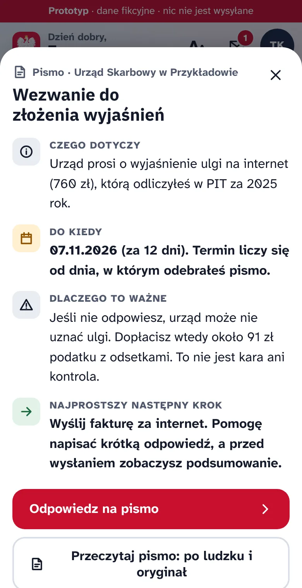
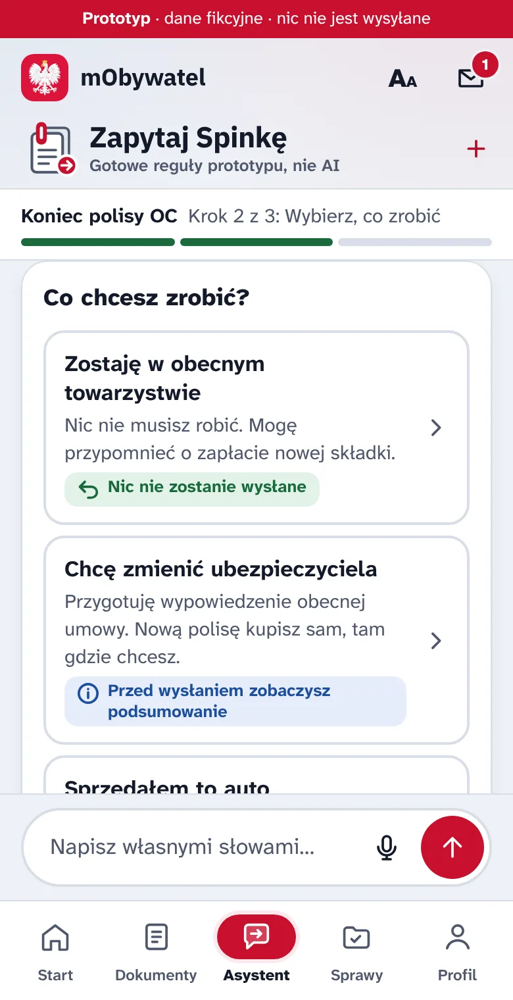
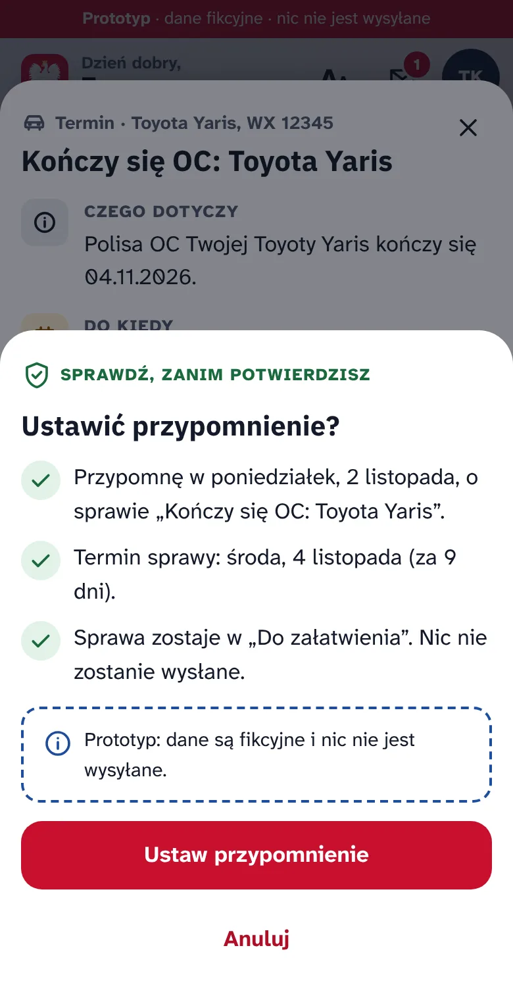
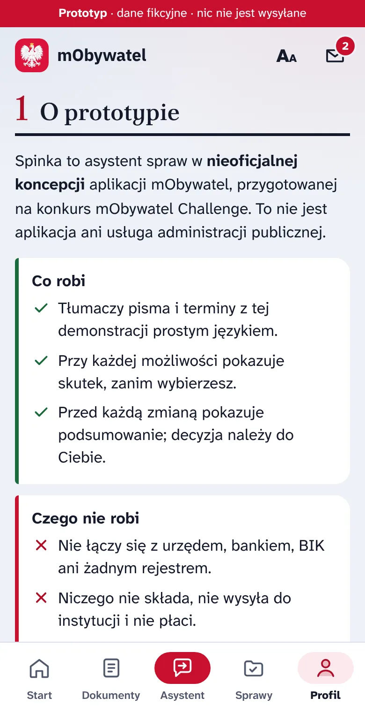
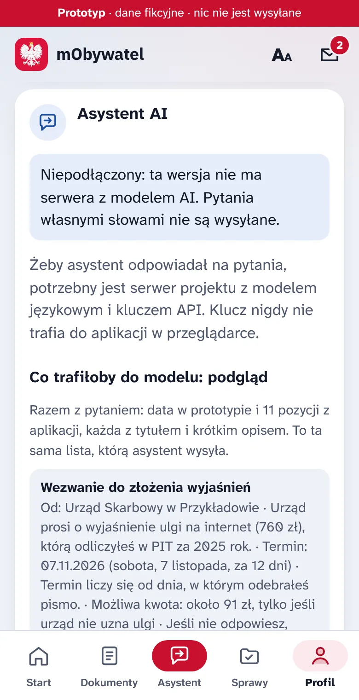

Spinka. Każda sprawa ma następny krok.
Następny krok: sprawdź Spinkę w działaniu.
Spinka to asystent spraw w koncepcji aplikacji mObywatel. Pokazuje, czego dotyczy pismo, do kiedy masz czas i co się stanie po każdej decyzji.
Koncepcja i projekt aplikacji: Igor M.
- Data w prototypie
- W sprawie
- asystenta spraw w koncepcji aplikacji mObywatel
Przeklikaj trzy prawdziwe sprawy
Klikalny prototyp z fikcyjnymi danymi. Spinka tłumaczy sprawę prosto, pokazuje skutek każdej możliwości, a decyzję zostawia Tobie.
-
Pismo z urzędu
Czego dotyczy, do kiedy odpowiedzieć i co się stanie, jeśli nic nie zrobisz. Wszystko w jednym oknie.
Przykład: pismo z urzędu -
Skutek przed decyzją
Przy każdej możliwości widać, co się stanie i czy cokolwiek zostanie wysłane.
Przykład: kończy się OC -
Przypomnienie bez wysyłania
Przypomnienie ustawiasz po podsumowaniu. Do urzędu ani do ubezpieczyciela nic nie trafia.
Demonstracja od początku
/aplikacja/
Działa w przeglądarce na telefonie i komputerze, bez logowania i instalacji.



Asystent mówi, skąd wie
W Profilu widać, co aplikacja pokazuje, gdzie to trzyma i co trafiłoby do modelu AI: ta sama lista fikcyjnych rekordów, którą serwer projektu przekazuje modelowi.
Dane aplikacji osobno, objaśnienie modelu osobno
Pod odpowiedzią są karty z prawdziwych rekordów aplikacji: dokument, sprawa i data. Tekst modelu jest podpisany jako objaśnienie.
Nie wie, to mówi
Gdy w danych czegoś nie ma, asystent to wypisuje i dopytuje, np. czy chodzi o raty kredytu, czy składki OC. Daty spoza danych są odrzucane.
Bez serwera nie udaje
Gdy model nie jest podłączony, asystent mówi to wprost i proponuje scenariusze demonstracyjne zamiast gotowych odpowiedzi.


Nieoficjalna koncepcja, działający prototyp
Spinka powstała na konkurs mObywatel Challenge. To nie jest oficjalna aplikacja mObywatel ani usługa administracji publicznej.
Koncepcja i projekt aplikacji
Igor M.
- Dane są fikcyjne
- Osoby, dokumenty, numery i instytucje w demonstracji są zmyślone. Nie podajesz żadnych swoich danych.
- Bez zgody nic nie wychodzi
- Scenariusze działają w przeglądarce. Pytanie do modelu AI wychodzi dopiero po Twojej zgodzie, z fikcyjnymi danymi aplikacji i bez danych osobowych.
- AI tylko z danych aplikacji
- Na pytania własnymi słowami odpowiada model językowy przez serwer projektu, wyłącznie na podstawie danych z aplikacji i ze wskazaniem źródła.
- Decyzja zawsze należy do Ciebie
- Przed każdym ważnym krokiem prototyp pokazuje podsumowanie: co się stanie, czego nie zrobi i czy da się to cofnąć.
Spinka nie ma twarzy
Nie udaje rozmówcy, który „myśli”. Stan rozmowy pokazuje jak dokument na biurku: postawą kartki, kątem spinki i układem linii. Te same stany są w aplikacji i w filmie, zawsze w tej kolejności.
- Słuchagdy piszesz pytanie albo wybierasz sprawę.
- Wyjaśniana podstawie danych aplikacji, ze wskazaniem źródła.
- Ostrzegagdy czegoś brakuje albo zanim coś zmienisz.
- Wskazuje następny krokjeden, ten najprostszy.
- Gotowew demonstracji; do urzędu nic nie trafia.